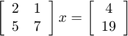
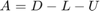
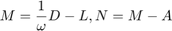

Demonstratie - metoda SOR
Contents
Consideram sistemul

Initializare
A = [2,1;5,7]; b = [4;19]; xn = [2;1]; omega = 1.11001; %SOR %omega =1; %Gauss-Seidel
Pregatirea matricelor metodei


M=1/omega*diag(diag(A))+tril(A,-1) N = M -A
M =
1.801785569499374 0
5.000000000000000 6.306249493247809
N =
-0.198214430500626 -1.000000000000000
0 -0.693750506752191
Prima iteratie
xv = xn; xn = M\(N*xv+b); ea = norm(xn-xv,inf); xn, ea
xn = 1.444995000000000 1.757189357178571 ea = 0.757189357178571
A doua iteratie
xv = xn; xn = M\(N*xv+b); ea = norm(xn-xv,inf); xn, ea
xn = 1.085807220869107 1.958678117933273 ea = 0.359187779130893
Dupa 20 de iteratii
for k=1:19 xv = xn; xn = M\(N*xv+b); ea = norm(xn-xv,inf); end xn ea er =ea/norm(xn,inf)
xn =
1.000000000000000
2.000000000000000
ea =
2.220446049250313e-16
er =
1.110223024625157e-16